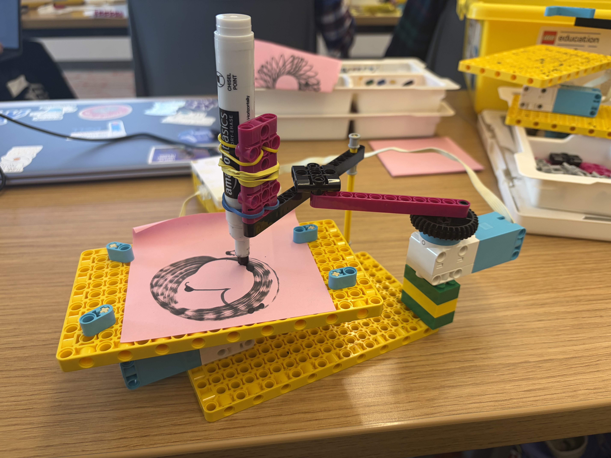
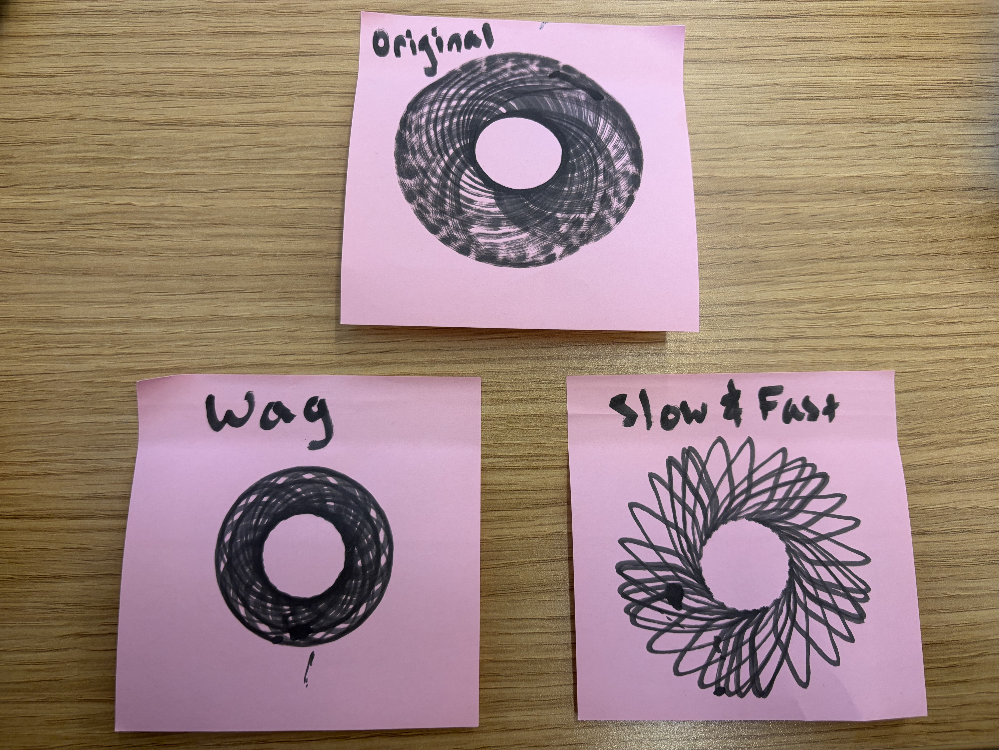

In this project, I built a spirograph drawing machine that used coordinated motion to create intricate looping patterns on paper. After assembling the machine, I coded the hub to change the speeds of each motor, make one motor wag while the other ran in continuous cycles, and display the message "Art Time!" on the LED matrix. This project combined mechanical design, coding, and creative experimentation to turn a simple drawing tool into an automated art machine.
